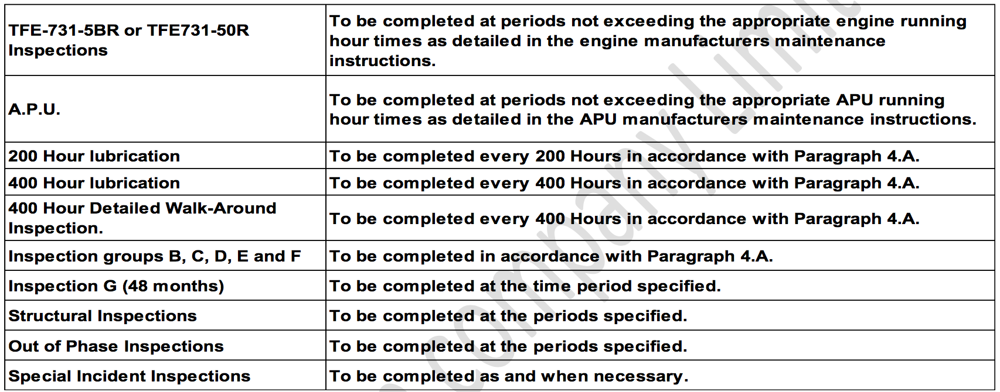

Introduction¶
Information¶
Note
Throughout this Aircraft Flexible Maintenance Schedule where Hawker 800XP is referenced, the designation of Hawker 850XP equally applies.
Note
The airplane illustrations throughout this Aircraft Flexible Maintenance Schedule may appear without winglets. These illustrations also apply to airplanes equipped with winglets, even though the winglets are not shown.
A. General¶
It shall be the responsibility of AC AVIATION company to ensure that the latest revision of the publications referenced in this schedule are utilized during operation, servicing and maintenance of the airplane.
B. Warnings, Cautions and Notes¶
Warning
Brings attention to an operating procedure, inspection or maintenance practice, which if not correctly followed, could result in personal injury or loss of life.
Caution
Brings attention to an operating procedure, inspection, repair or maintenance condition, which if not strictly observed, could result in damage or destruction of equipment.
Note
Brings attention to an operating procedure, inspection, repair or maintenance condition, which is essential to highlight.
C. Special Conditions Cautionary Notice¶
Airplanes operated for Air Taxi, or other than normal operation, and airplanes operated in humid tropics, cold and damp climates, etc., may need more frequent inspections for wear, corrosion and/or lack of lubrication. Under these adverse conditions, perform periodic inspections in compliance with this guide at more frequent intervals until the owner or operator can set his own inspection periods based on the contingencies of field experience.
Caution
The recommended periods do not constitute a guarantee the item will reach the period without malfunction as the aforementioned factors cannot be controlled by the manufacturer.
D. Schedule Layout¶
Title page¶
A Title page is located at the beginning of the schedule and provides the part number of the schedule, and instruction data. Information throughout this schedule is applicable to all models listed on the title page except where specifically stated.
The printed schedule will have a Record of Revisions page. The Record of Revisions is provided following the Current LOEP List. When a revision is inserted, the revision number, the date the revision is inserted into the schedule, and the initials of the person(s) inserting the revision should be recorded on this page and in the Section 1 (1.4 Record Of Revision)
ATA Task Codes¶
This section lists the individual tasks contained in the schedule in ATA order.
E. How To Use The Schedule¶
The intent of this Maintenance Program is to provide AC AVIATION Company with the option of selecting the maintenance plan best suited to their own flying schedule. The charts shown in Figure 1 and Figure 2 are used in selecting the inspection method chosen.
Note
For composition of schedules and breakdown refer to paragraphs 3 and 4.
It is the responsibility of AC AVIATION Company, those subsequent maintenance recommendations, including airworthiness information promulgated in Service Bulletins, Service Letters, etc., issued by the constructors and vendors should be evaluated and, where appropriate, should be incorporated in this Schedule by the approved amendment procedures.
The requirements of this Schedule shall normally be implemented at or before the periods specified. Extensions to prescribed periods are subject to agreement with the CAAT and should be made only when the periods cannot be complied with due to circumstances which could not have been reasonably foreseen by AC AVIATION Company or by AC AVIATION Company’ contracted Maintenance Organization.
Maintenance Start Data¶
All the tasks in the Out of Phase, Component Requirements and Airworthiness Limitations Document (ALD) are calculated as starting from the date of original certification (issuance of original standard airworthiness certificate) or from component installation during completion. CAAT or applicable regulatory required inspections and maintenance must be done in accordance with specific regulatory requirements. All Hawker Beechcraft Corporation recommended inspections, maintenance and servicing shall be based on the date of release for service following aircraft completion. These statements are not applicable to the airplane engines or the APU, which must be maintained in accordance with their own manufacturers, recommended or required maintenance instructions.
The airplane must be maintained in accordance with the Maintenance Schedule based on original certification during completion. Both a 400 hour Detailed Walk-Around Inspection and 12 month (E Inspection) are required at the time of completion if the difference between the date of original certification and completion is more than six months or if the airplane has more than 50 hours total flight time.
Any variation to the inspection must be approved by CAAT.
Note
The requirements referred to in this Maintenance Schedule are applicable to equipment installed to Hawker Beechcraft Corporation and Hawker Beechcraft Corporation Completion Center approved modifications. For airplanes with equipment installed to any other FAA approved modifications refer, to that particular Design Authority responsible for the installation. Refer to the relevant Vendor Publication for any Servicing/Maintenance instructions which are not specifically defined in this schedule.
Factory Aircraft Comprehensive Tracking System (FACTS) program is the factory authorized computerized maintenance tracking and forecasting system that adheres to the guideline established in this maintenance schedule.
Periods And Tolerances¶
A. General Instructions¶
- Flying Times
All periods quoted in the Schedule in ‘flying hours’ are based on flight (take-off to touch-down) times. Where, due to airport congestion, block (chock-to-chock) times exceed flight times by an average of more than 20 per cent, corresponding adjustments should be made to the overhaul periods of selected components such as starter/generators, hydraulic pumps and cut-out valves.
- Fatigue Lives and Mandatory Limitations
ALL registered airplanes must comply with the requirements of CAAT
All other life limitations classified as mandatory by the constructor/manufacturer must also be observed unless varied by CAAT.
The Structural Inspection frequencies quoted in this Schedule are based on a set of assumed typical operating conditions. These assumptions take into account the experience obtained in service with the earlier variants of airplanes together with the enhanced capabilities of the Hawker 800XP Aircraft.
The projected utilization has been described in the form of Flight Plans or Mission Profiles; whilst these have been invested with a degree of conservatism it is not possible for AC AVIATION Company to make sure that they will cover every airplane in service.
Should the actual utilization differ significantly from the assumed mission profiles then due allowance must be made for the effects on the structural damage tolerance and fatigue characteristics and, hence, the inspection and replacement schedules.
For the purposes of compiling the Structural Inspection frequencies the typical mission profiles allow for:
- One cabin pressurization to full differential (8.55 psi).
- One full cycle of flap operation (take-off and landing).
- One full undercarriage cycle including braked, full stop landing per flight where a flight is defined as a single completed take-off and landing sequence. Touch and go landings, or rollers, are considered to be equivalent to full stop landings for maintenance purposes.
It is also assumed that the majority of flights are at altitudes of 25,000 feet and above using normal climb and descent procedures, with an allowance for flights at lower altitudes. The rate of fatigue damage to the structure could be greater than predicted for the assumed typical utilization if more than 30% of the flights involve cruises at altitudes below 15,000 feet or if less than 70% of the flights involve cruises at or above 25,000 feet.
The assumed typical block time for average flights is 1.5 hours. Fatigue damage per flight could be increased if on average, more than 70% of flights are of a longer duration.
If AC AVIATION Company finds that the utilization of their aircraft differ from the average conditions outlined above should contact Hawker Beechcraft Corporation for guidance.
In order to fully describe AC AVIATION Company particular usage of our airplane the following information is required:
- Stage length and block time
- Climb time and speed
- Cruise time, altitude and speed
- Descent time and speed
- Stand-off time, altitude and speed
- Number of pressurizations and differential
- Number of flap operation cycles
- Number of undercarriage operation cycles
- Number of missed approaches
- Number of touch-and-go landings (rollers)
- Taxi time (pre- and post-flight)
- Typical zero fuel weight
- Typical landing weight
- Percentage of total flights flown to this mission profile.
Note
If the airplane carries out widely differing types of operation these should be divided into groups of similar profiles each of which require the above data.
Other general information to be advised as follows:
- Airplane registration
- Airplane serial number
- Airplane series
- Total flying hours and landings (including touch-and-go landings)
- Hours and landings flown in the described flight profile(s)
- Geographical disposition of operations.
- Overhaul Periods - Radio and Radar Equipment Subject to negotiation with the CAAT, radio and radar equipment listed in the servicing of this Maintenance Schedule may be maintained on an “On Condition” basis.
- Date Marking of Equipment Equipment which is required to be date marked after inspection or re-test to comply with this Schedule, should be re-marked with the date at which the next inspection or test is due.
B. Tolerances¶
Each inspection has a period for accomplishment, that period is the tolerance window. A tolerance window is defined as the period that an inspection may be accomplished, and does not change the next due time. The tolerance window for each inspection is specified in paragraph 4.A.
However AC AVIATION Company will never use these Tolerances unless otherwise approved by CAAT in the time-by-time of inspections.
C. Structural Inspection and Out of Phase Inspection Tolerances¶
{kind=link}
Note
Subsequent periodic requirements must be accomplished based on the original cycle or actual completion Hour/Date/Cycles, whichever is the more restrictive.
Note
These tolerance periods DO NOT apply to Chapter 49 items that are controlled by APU running hours. Note: These tolerance periods DO NOT apply to Part 2, Routine Inspections.
Note
These tolerance periods DO NOT apply to Component Requirements and Mandatory Lives.
Composition Of Schedule And Task Numbering¶
A. Composition of Schedule¶
The Schedule is composed of nine parts, namely:
Part 1...Minor inspections (Pre-Flight, Post Flight, 200 and 400 Hour Lubrication and 400 Hour Detailed Walk- Around Inspection).
Note
Pre-Flight and Post Flight inspections are covered in the Hawker 800XP Ground Handling Checklist P/N 140-590032-0025.
Note
Reference is also made in Part 1 to Engine, APU, Thrust Reverser and Airbrake Selector Lever Baulk Inspections.
Part 2...Routine Inspections (Inspection “B”, Inspection “C”, Inspection “D”, Inspection “E”, Inspection “F” and Inspection “G”).
Part 3...Structural Inspections.
Part 4...Out of Phase Inspections. Part 5...Special Incident Inspections. Part 6...Panel Location Charts.
Part 7...Lubrication.
Part 8...Component Requirements. Part 9...Mandatory Life Limitations
B. Task Numbering¶
Each individual task within parts 1, 2, 3 and 4 has its own unique task number, consisting of six digits. The first two digits relate directly to the ATA chapter number and the last four digits relate to the task, e.g. 270025 is the 25th task in Chapter 27, Flight Controls.
For recording requirements each minor and routine inspection period has a unique ATA Chapter 05 code number Area inspections within the routine inspections are also given a unique code number. These are 05**** numbers and will follow the unique number allocated to the inspection, e.g. the inspection number for Inspection B3 is 050140, therefore the area inspection number will be 050141.
The first page of each group of routine inspections consists of the following:
- The relevant inspection title (e.g. Inspection “B3”)
- The unique code number mentioned above (e.g. 050140)
- List of Effective Pages
- Instructional Data Block
- Completion of Inspection Block
Inspection Periods¶
Note
If an inspection is done within the tolerance window, the time when the inspection is next due is not changed.
Note
Minor Inspections that are divided into individual task codes so they can be used for scheduling and tracking, can be phased similar to Part 2. Routine Inspections, providing each task does not exceed the inspection period or tolerance window, (Example: If Item J. Rear Equipment Bay inspection in the 400 Hour Detailed Walk-Around has a task code assigned then the entire “Item J” could be scheduled and completed at the same time as “Inspection B7 - Rear Equipment Bay and Rear Fuselage inspection”).
A. General¶
Firstly AC AVIATION Company Limited have chosen to complied with the un-phased inspection method and may be change to the Phased formatting in the future for fit with the Aircraft fleet mission.
- 200 Hour lubrication - 200 flying hour interval with 50 flying hour tolerance window (191 to 240).
- 400 Hour lubrication - 400 flying hour interval with 50 flying hour tolerance window (391 to 440).
- 400 Hour Detailed Walk-Around inspection has a 400 flying hour interval with a 50 flying hour tolerance window (391 to 440).
- Airbrake Selector Lever Baulk inspection has a 400 flying hour interval with a 50 flying hour tolerance window (391 to 440).
When an inspection group is not phased:
- Inspection group “B” has a 800 flying hour interval with a 50 flying hour tolerance window (791 to 840).
- Inspection group “C” has a 1600 flying hour interval with a 100 flying hour tolerance window (1551 to 1650).
- Inspection group “D” has a 3200 flying hour interval with a 200 flying hour tolerance window (3151 to 3350).
- Inspection group “E” has a 12 month interval with a +/-1 calendar month tolerance window (11 month to 13 month).
- Inspection group “F” has a 24 month interval with a +/-2 calendar month tolerance window (22 month to 26 month).
- Inspection “G” has a 48 month interval with a +/-2 calendar month tolerance window (46 month to 50 month).
- When a task or inspection item in an inspection is started, the airplane MUST NOT be flown until the task or inspection item is completed and the aircraft has been approved for return to service in accordance with the requirements of the CAAT.
Note
Assure that the task or inspection item performed is signed off in such a manner that clearly indicates when the inspection tasks are completed.
- Multiple inspections (e.g. B1 through B12) may be accomplished within the same tolerance window, however each inspection is individually tracked.
- Each inspection remains current, when completed, until, at a maximum, the last day or flying hour of the next allocated period for the identical inspection.
- Never exceed the allowed inspection window for a task when changing formats from phased to un-phased; or from un-phased to phased.
B. There is no Inspection group A¶
Instead, there is a 400 Hour Detailed Walk- Around inspection.
C. The breakdown of Inspection¶
Groups “B”, “C”, “D”, “E” and “F” and the areas dealt with in the inspections are listed below.

D. Flexible Maintenance Charts (Figure 1. and Figure 2)¶
The charts layout the inspections in hours (Figure 1) and months (Figure 2) with 12 columns for Inspection groups “B”, “C”, “D”, “E” and “F”. Inspection “G” only has one column. For the conventional inspection method an X would be placed in each column at the interval for that inspection, refer to Introduction - Appendix Chart 1 (Sheets 1 and 2) for example. This would be done for each of the six inspections, B through G.
The flexible or progressive inspection method uses the same charts with X’s placed in each column at the time selected. The X represents that time when each inspection would be done. Appendix Chart 2 (Sheets 1 to 4) show one example of this method.
Note
The charts are designed to provide maximum flexibility such as doing any individual B through F inspection in a packaged method, while doing other inspections at one time. An example of this would be to do Inspection groups B and C in packages and all other inspections at one time.
Note
The appendix charts are provided as examples of the most commonly used inspection methods.
D. The inspections contained in the Schedule are to be completed in accordance with the following instructions¶
{kind=link}
F. Sign Off Requirements¶
Note
The sign off requirements are based upon the method of scheduled maintenance accomplishment.
When an inspection group is NOT phased
- Each inspection must be accomplished, but only the top level form requires completion.
- No inspection sign off is required.
When an inspection group is phased
- Each inspection must be signed off as a top-level inspection. Each inspection is then tracked with the appropriate interval.
- No overall top level sign off is required.
Continued Airworthiness Requirements¶
AC AVIATION Company should institute a system for the assessment of continuing airworthiness information. This information will originate from the Responsible Authority of the State of Manufacture in the form of Airworthiness Directives (or documents of comparable intent) and from the constructor/manufacturer in the form of Service Bulletins, Letters, Safety Communiques, Information Leaflets etc. resulting from In-Service experience.
AC AVIATION Company should add items to this Schedule to cover their special installations or equipment, and to make provision for any regulation, national or local, in force at the time.
Nothing in this Schedule is to be construed as absolving persons employed in the implementation of the requirements of this Schedule from making sure that the airplane is, at all times, maintained in an airworthy condition. Any damage or defect affecting the safety of the airplane must be rectified before the airplane flies again.
Compliance with the mandatory requirements of the Responsible Authority of the country of origin must be achieved.
When referring to all parts within the Schedule the Operator should use only those items relevant to his own airplane and disregard all other items.
Continuing Airworthiness and other Service Information must be continuously evaluated AC AVIATION Company or his contracted maintenance organization and, where necessary, appropriate action must be taken to amend the Maintenance Schedule.
A. At each periodic inspection the depth of inspection must:¶
- Be of a degree sufficient to make sure that the items to be inspected will remain serviceable until the next higher period for inspection becomes due.
- Make sure that at the time of the inspection items are free from any defects likely to affect airworthiness. The inspections made to assure this must comply with the minimum standards set out hereunder, having regard to the material from which the item is made and applying the appropriate standards wherever possible.
Note
In general, when dismantling and access is known to be required by this Schedule, this is stated against the item concerned.
Note
Due to different equipment fits between airplanes and in order to achieve a satisfactory exposure of the area/item to be inspected, it may be necessary to displace/remove other items, (e.g. electrical cables, piping, fittings etc.) which are not stated in the Schedule.
Note
Access requirements quoted are minimum requirements and further dismantling of an item, group or assembly may be considered essential by the Chief Inspector or a Licensed Aircraft Maintenance Engineer in order to assure airworthiness.
Note
Structure is to be sufficiently clean to enable an effective inspection to be done.
B. A series of standard terms are used throughout the schedule to indicate the inspection requirements. Their interpretations are as follows:¶
- Area Inspection... A visual inspection of the area using the inspection criteria as detailed in paragraph 6.C. for all items of equipment in the area relating to the trade disciplines listed and access quoted. The depth of the area inspection is determined by the degree of access specified for the particular inspection period and the structure rendered visible at that time.
- Satisfactory Condition... A general visual inspection for signs of damage, cleanliness, security of attachment and visible connections, locking and bonding.
- Detail Inspect... An intensive visual examination of a specific structural area, system, installation or assembly to detect damage, failure or irregularity. Available lighting is normally supplemented with a direct source of good lighting at intensity deemed appropriate by the inspector. Inspection aids such as a mirror, magnifying lenses, etc. or an approved NDT technique may be used. A 10X Lighted Magnifier should be used to inspect all instances of suspected wire damage. All wire related conditions should be reported using the ATA spec 100, code 97-xx-xx format. Surface cleaning and elaborate access procedures may be required.
- Check... Make a comparison of a measurement of time, pressure, temperature, resistance, dimension or quantity with a known figure for that measurement.
- Test... The component to be tested may be removed from the airplane or checked in situ. All the work is to be done in accordance with the data contained in the relevant Vendor Maintenance Manual.
- Functional Test... Make sure, by use of test equipment if necessary, that a complete system functions correctly. (8) Operational Test... Make sure, by use of test equipment if necessary, that a component within a system OR part
of a system operates correctly.
- Detailed Walk-Around Inspection... This inspection is to be a thorough visual inspection of the airplane which does not require removal of access panels, use of specialized tools or equipment. Lighting and cleanliness is to be adequate to detect damage, failure or irregularity. Suspect conditions requiring additional investigation are to be treated as defined in “Detail Inspect” (Ref. Paragraph (4)).
C. The inspection criteria are:¶
Metal parts: e.g. applicable to all metal parts, bodies or casings of units in systems and in electrical, instrument and radio installations, metal pipes, ducting, tubes, rods, levers.
- Inspect for:
Cleanliness, external signs of damage, leaks, overheating or discharge. Fluid ingress. Obstruction of drainage or vent holes or overflow pipe orifices. Correct seating and sealing of fairings and serviceability of fasteners. Security of attachment, fasteners, connections, locking and bonding.
- Freedom from:
Distortion, dents, scores, chafing, pulled or missing fasteners, rivets, bolts, screws. Signs of cracks and wear. Separation of bond. Failure of welds and spot welds. Deterioration of protective treatment, and signs of corrosion.
Rubber, Fabric, Fibre Glass and Plastic Parts e.g. coverings, ducting, flexible pipes, flexible mountings, seals, heater muffs, windows etc.:
- Inspect for:
Cleanliness, cracks, cuts, chafing, kinking, twisting, crushing, contraction - sufficient free length. Deterioration. Crazing. Loss of flexibility (other than fabric covered component), overheating. Fluid soakage.
Security of attachment (supports, packing and electrical bonding correctly positioned, serviceable and secure) connections and locking.
Control system components:
- Inspect for:
Correct alignment - no fouling. Free movement. Distortion. Signs of bowing. Scores. Chafing. Fraying. Kinking. Signs of wear. Flattening. Cracks. Loose rivets. Deterioration of protective treatment and signs of corrosion. Electrical bonding correctly positioned, undamaged and secure. Attachments, end connections and locking secure.
Note
Free movement should be established at extreme ranges of travel with full trim applied.
Note
Full travel of the rudder circuit should be confirmed with the pedals at the full forward and full aft adjustment positions.
Electrical Motors, Alternators, Generators and Actuators:
- Inspect for:
Cleanliness, obvious damage, signs of overheating, signs of corrosion and security of attachments and connections. If protective covers are required to be removed: cleanliness, scoring, pitting, brushes free in holders, not excessively worn and correct bedding. Adequate spring tension. Overheating. Fluid ingress.
Relays, Solenoids and Contactors:
Inspect for:
Cleanliness, obvious damage, signs of overheating, signs of corrosion and security of attachments and connections. If protective covers are required to be removed: cleanliness, pitting or burning of contacts, signs of overheating and security of contacts exposed.
Markings, notices, frequency charts, compass corrector cards, warning and caution labels, placards:
- Inspect for:
Legibility and security of attachment.
Note
Any other inspection or work requirement not covered by the above standards is specifically written into the Schedule.
Electrical Wiring, Cables and Looms:
- Detail Inspect for:
Criteria contained in AMM 125/H-20 Chapter 20 - Standard Practices - Airframe, 20-10-50, Wiring Procedures and Repair.
Structural Inspection
Detail inspect lap joints, butt straps, stringers, frames, bulkheads, ribs, longerons and skins for:
Lack of adhesion of the paint or sealant. This could indicate the presence of surface corrosion under the paint film or sealant.
Bubbles or eruption of the paint film or sealant. This condition could indicate local pockets of corrosion and it is important to ascertain, beyond reasonable doubt, that any bubble or eruption found is a build up of paint or sealant and not a build up of corrosion product. If any doubt exists the bubble or eruption should be broken, the area cleaned up and, if satisfactory, the treatment restored.
Signs of corrosion on the edge of any member where it joins the skin. If corrosion is found the suspect area of the joint must be cleaned of all paint. Where corrosion is confirmed and it penetrates between the faying surfaces of the joint, the affected area must be visually examined by removing bolts or rivets to check the extent of corrosion and to assist in repair.
Any signs of possible cracking or corrosion is to be stripped of paint and inspected further using dye penetrant.
Non Destructive Testing (NDT).
Where it is considered that a visual inspection is not possible due to the nature of the structure, or an excessive amount of dismantling would be necessary, examination by X-ray or other methods of non-destructive testing in accordance with the approved techniques is used as the inspection medium. The techniques are contained within the Non-destructive Testing Manual.
D. Maintenance Practices and Procedures¶
Practices and procedures necessary to complete the requirements of this Maintenance Schedule or work resulting from its application should be, as a minimum, to the standard recommended in:
- The relevant Maintenance, Overhaul and Repair Manuals.
- The requirements of the Airworthiness Authority.
E. All Vital Points and Control Systems¶
Whenever inspections are made or work is undertaken on vital points, flying or engine control systems, a detailed investigation must be made on completion of the task to make sure that all tools, rags or any other loose articles which could impede the free movement and safe operation of the system(s) have been removed, and that the systems and installation in the work area are clean and unobstructed.
If, as a result of the application of this Schedule, any part of either the main or any associated system is dismantled, adjusted, repaired or renewed, that part of the system(s) which has been disturbed shall be subjected to a duplicate inspection, with free movement, range, direction and tension checks and shall be certified in accordance with the requirements of CAAT.
F. Wear Limits on All Flying Control and Engine Control Cables¶
Whenever flying control or engine control cables are required to be inspected in accordance with this Maintenance Schedule, the following wear limits apply:
- Significant wear on outer wires but obviously less than 50% of individual wire cross section and with individual wires clearly separated can be considered as acceptable.
- Wear on outer wires at 50% or more, usually indicated by difficulty in distinguishing individual wires, and wear area embracing 6 consecutive wires, raise and carry forward for repeat inspection at not more than 300 flying hour periods.
- Wear on outer wires at 50% or more and not more than 3 broken wires at any wear position - change within 30 flying hours.(4) Wear or damage in excess of para. (3) - change cable.
- Where the possibility of failed wires bunching around pulleys etc. can occur, the cable must be changed, irrespective of the extent of any other damage.
- On sleeved cables, up to 50% wear of the sleeve thickness is acceptable. To clarify a difference in terminology, “Swaged tubes” and “Sleeved cables” are physically the same thing.
G. Fuel System Contamination Checks¶
If, as a result of the application of this Maintenance Schedule any part of the system is dismantled, adjusted, modified, repaired or renewed, the systems shall, after completion of the work, be tested to establish the correct operation of the system.
The following checks must be made to establish that the fuel systems are free from contamination.
Fuel system water drain checks are to be performed at periods not exceeding 24 hours elapsed time.
AC AVIATION Company must be satisfied with the quality of all
fuel taken on board his airplane, specially in respect of
contamination with water, and monitor the suppliers quality
performance.
H. Portable Valise Type Liferafts¶
At the appropriate Overhaul period ten percent of all liferafts installed in fleets using a system bottle and release mechanism are to be inflated and tested. Make sure that deployment and inflation is satisfactory.
SCHEDULE FORMAT¶
A. Minor and Routine Inspections¶
The requirements of the Minor and Routine Inspections are divided into airplane areas, system and component requirements:
Area Inspections
The area inspections require a visual inspection of the area using the inspection criteria as detailed in paragraph 6.C. for all items of equipment in the area relating to the trade disciplines listed and access quoted. The depth of the area inspection is determined by the degree of access specified for the particular inspection period and the structure rendered visible at that time.
System and Components Requirements.
These sub-sections give the inspection and servicing requirements of specific systems and components at the inspection period under consideration. The requirements are laid out in ATA 100 chapter order.
System functional tests are given at the beginning of each Inspection and are presented in ATA 100 chapter order. When a requirement in this Schedule refers to an AMM sub-paragraph or specific step(s) then all relevant warnings, cautions and preparatory procedures must be observed.
Overhaul periods, servicing and bench tests for non-RAC manufactured components are governed by the maintenance manuals of the respective manufacturers. Where possible, to aid Operators with their inspection of these components, the Aircraft Maintenance Manual is used as a reference for removal and installation.
B. Structural Inspections¶
The Structural Inspectionqs are also divided into airplane areas, with each area containing the inspection requirements and “Not exceed” periods for specific structural parts. The degree of access required is stipulated for each inspection requirement.
C. Out of Phase Inspections¶
The Out of Phase Inspections are presented in ATA 100 chapter order. The “Not exceed” period for the inspection(s) are stated in the individual tasks.
D. Special Incident Inspections¶
This Part contains the special inspections considered necessary if the airplane has been subjected to abnormal stresses or climatic conditions in flight, or during landing.
E. Panel Location Charts¶
The charts contained within this Part illustrate the location of panels which may be required to be removed or opened during airplane servicing.
F. Lubrication¶
Details of routine lubrication and types of lubricants used are detailed in the text and illustrations contained within this Part. The AMM references of the lubricants used for general lubrication, together with a system of codes denoting lubrication periods, are tabulated in the Introduction at the beginning of the Part. The AMM references of special purpose lubricants used for specific applications are included in the relevant text and illustrations.
G. Component Requirements¶
Listed within this part are components or assemblies which are subject to hard-time overhaul periods, bench tests or replacement out of phase with the airplane servicing periods. The consolidated list is given under system headings in ATA 100 chapter order, and includes Part Nos. and the names of the manufacturers.
Where the part number of a component is followed by an asterisk(s) (e.g. 42022-**) this indicates that the requirement is applicable to all variants.
H. Mandatory Life Limitations¶
The components and assemblies subject to Mandatory Life Limitations are now contained in the Airworthiness Limitations Document Reference No. CJE-HPA-C-GEN-AW1667.
Abbreviations, Terms And Definitions¶
All significant terms and abbreviations used within the Schedule are defined below or, in the absence of formal definitions; those quoted in the World Airlines Technical Operations Glossary are used.
| AMM | Aircraft Maintenance Manual. |
| B/Chk | Bench check. |
| CMM | Component Maintenance Manual. |
| DTD | Directorate of Technical Development (UK) specification. |
| ICAO | International Civil Aviation Organization. |
| ISB | Inspection Service Bulletin. |
| LMM | Light Maintenance Manual. |
| MM | Maintenance Manual. |
| MIL | Military (ICAO and US) specification. |
| NDT | Non-destructive Test. |
| O/H | Overhaul. |
| Repl. | Replace. |
| SB | Service Bulletin. |
| AD | Airworthiness Directive |
| CAAT | Civil Aviation Authority Of Thailand |
| DCA | Department Of Civil Aviation |
Additional Requirements Introduced By Revision Action¶
Unless otherwise directed by the relevant Letter of Transmittal, or Service Bulletin action, additional requirements introduced into the Schedule need not be added into an airplanes existing cycle of maintenance until the next period at which the requirement becomes due.
Samples Of Flexible Maintenance Charts.¶
A. Chart 1 (Figure 1, Sheets 1 and 2)¶
This chart shows conventional servicing when ALL of the Inspection requirements are done at one time, e.g.
- Inspection B (B1 to B12 inclusive) done at 800 Hour, 1600 Hour, 2400 Hour Etc.
- Inspection C (C1 to C12 inclusive) done at 1600 Hour, 3200 Hour, 4800 Hour Etc.
- Inspection D (D1 to D12 inclusive) done at 3200 Hour, 6400 Hour, 9600 Hour Etc.
- Inspection E (E1 to E12 inclusive) done at 12 Months, 24 Months, 36 months, 48 Months Etc.
- Inspection F (F1 to F12 inclusive) done at 24 Months, 48 Months Etc.
B. Chart 2 (Figure 2, Sheets 1, 2, 3, and 4)¶
This chart shows one suggested flexible method of staggering the sub-inspections.
{kind=link}
Figure 1: Sheet 1–Flexible Maintenance Chart by Hour

Figure 1: Sheet 2–Flexible Maintenance Chart by Month
{kind=link}
Figure 2: Sheet 1–Felxible Servicing by Hour
{kind=link}
Figure 2: Sheet 2–Felxible Servicing by Hour
{kind=link}
Figure 2: Sheet 3–Felxible Servicing by Month
{kind=link}
Figure 2: Sheet 4–Felxible Servicing by Month
{kind=link}
Figure 3: ATA Task Codes (1)

Figure 3: ATA Task Codes (2)